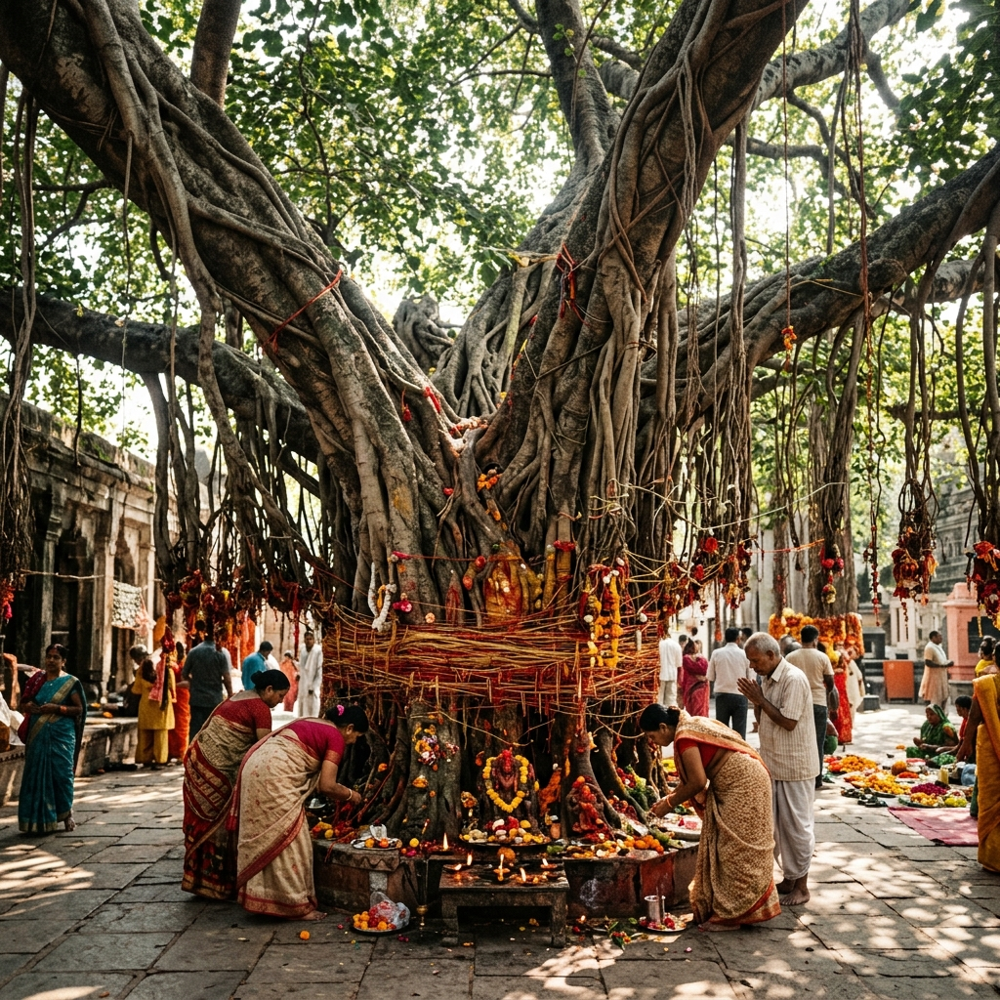
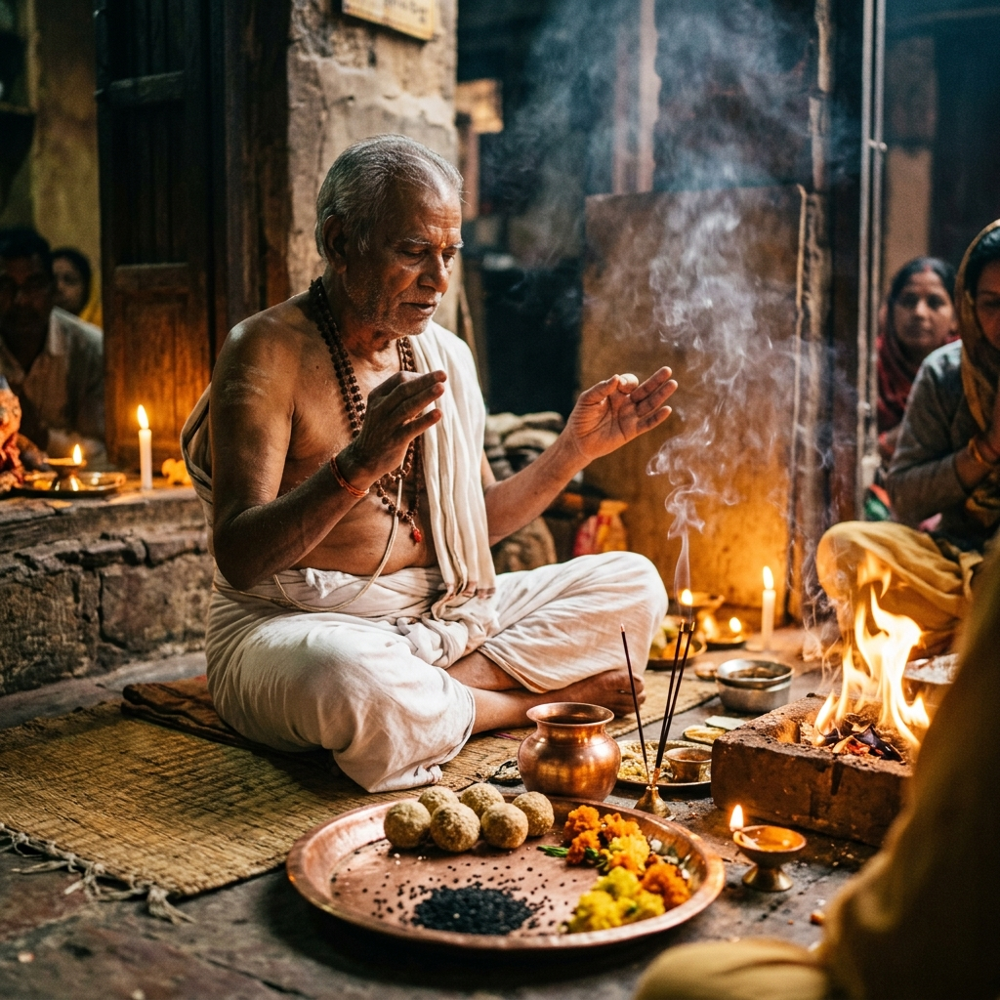
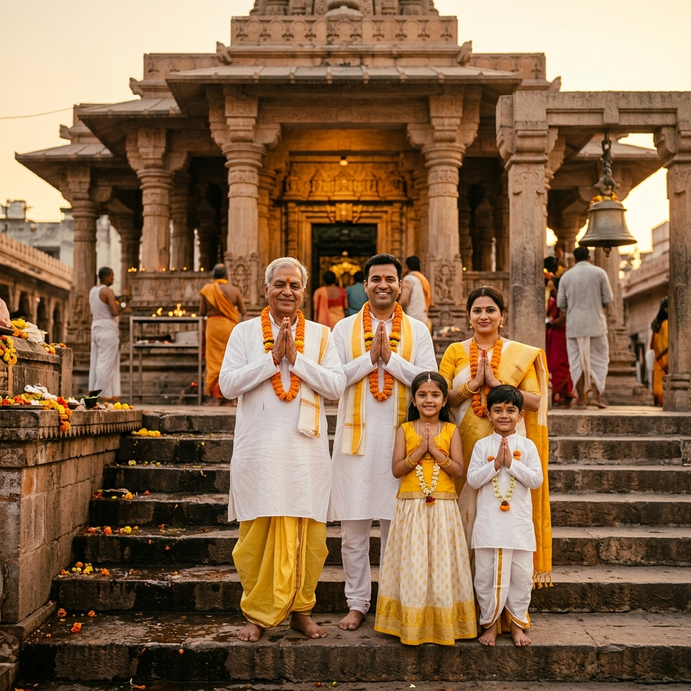
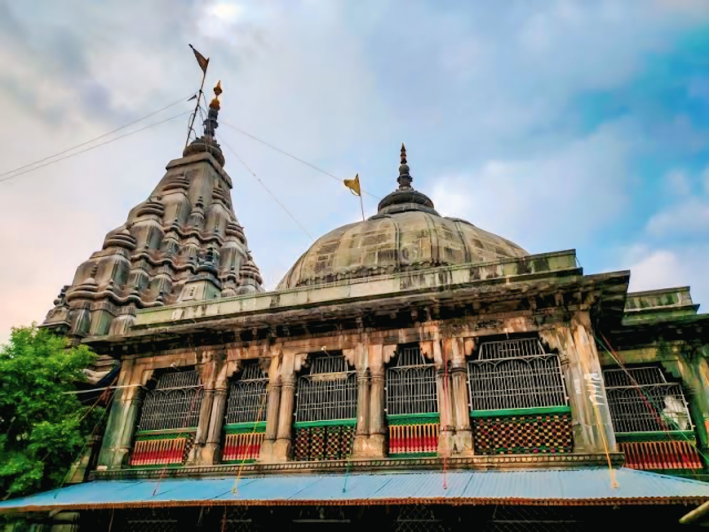
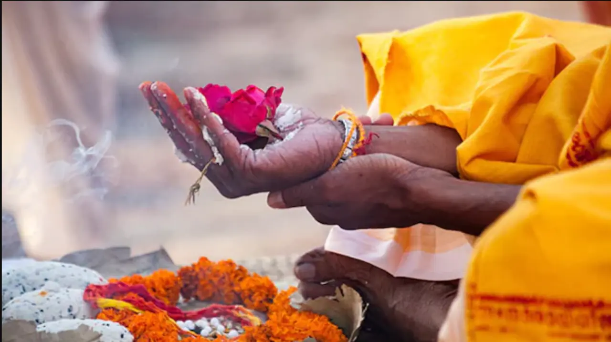
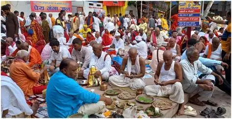

Visual Sacred Journey
Sacred Gallery of Gaya Ji
Immerse yourself in the spiritual beauty of ancestral rituals, ancient temples, holy rivers, and the devotion of thousands of pilgrims.









Have you visited Gaya Ji? Share your photos with us and we'll feature them in this gallery.
Share Your PhotosReady to Create Your Own Sacred Memories?
Join thousands of devotees who have found peace for their ancestors in the holy land of Gaya Ji.